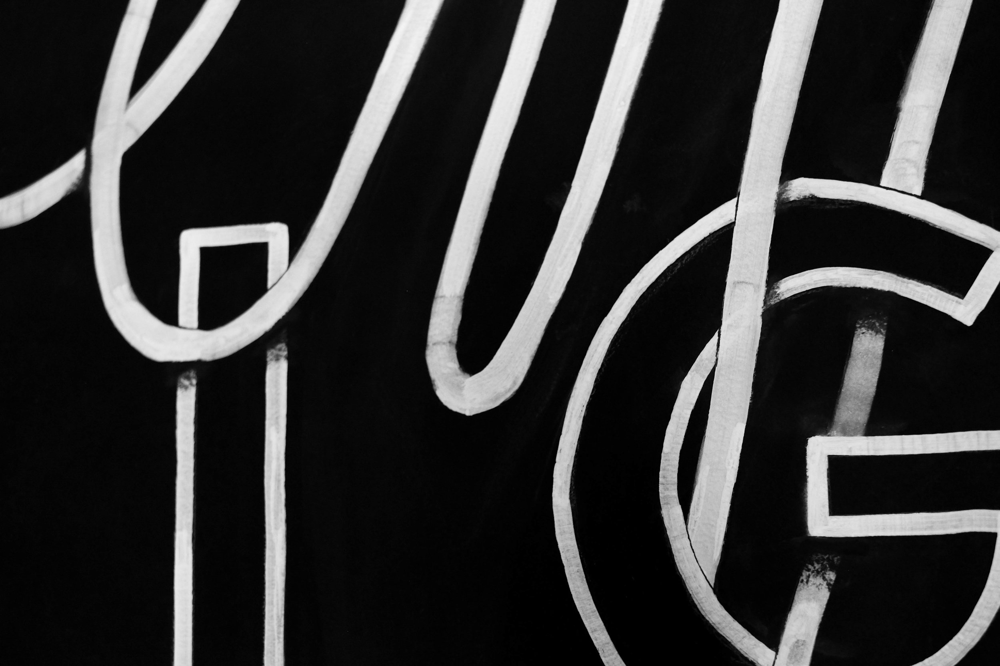
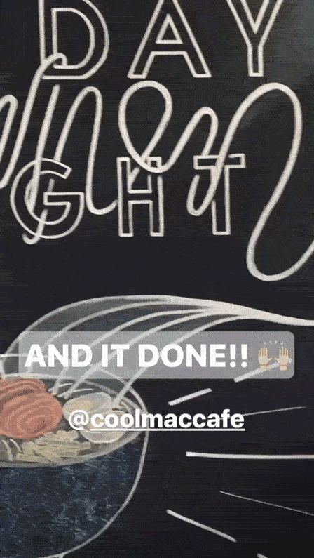

Cool Mac Cafe was launching their weekly Friday Night Ramen event. They wanted their specials menu wall to be revitalized for the promotion of this event. I designed and hand-lettered this piece, using liquid and regular chalk; and shot these photos.
View promo video

Close up shot of details
